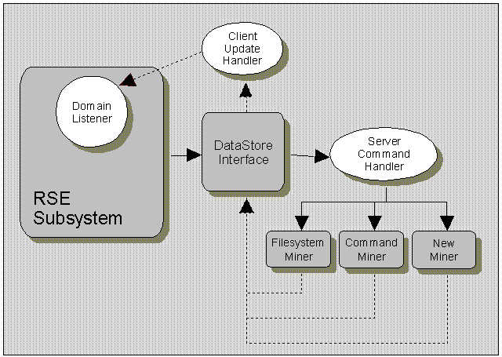
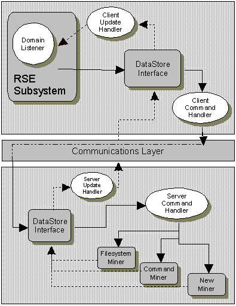

Communication in the DataStore is asynchronous and symmetric. Commands sent and results received are all represented in the same form, DataElements and the underlying means of transmitting this information is basically the same for each. When a command is issued, it gets queued and then later routed to the appropriate miner where it gets executed. A miner returns results by updating the DataStore repository with information. Like commands, these results are queued and then later notifications are sent out to any listener that requires the results.
The asynchronous routing of data and commands between a client and the tools is made possible by threads, called handlers. There are two types of handlers - a Command Handler and an Update Handler. Each handler thread contains a queue of data that needs to be transmitted and each periodically communicates the data contained in it's queue.
The job of the Command Handler is to route commands to the miners. There are two types of command handlers.
The Client Command Handler is a command handler responsible for transmitting its queue of DataStore commands across a network to the server DataStore. This handler encapsulates the communication of DataStore client data to a DataStore server. The Client Command Handler interfaces the DataStore communication layer, where its queue of commands gets serialized into XML before being sent over a TCP/IP socket to the server.
The job of the Update Handler is to notify the client that some results have been received or changed. There are two types of update handlers.
The Client Update Handler is an update handler responsible for sending out domain notifications for each unit of data contained in its queue.
The Server Update Handler is an update handler responsible for transmitting its queue of DataStore objects across a network to the client DataStore. This handler encapsulates the communication of DataStore server data to a DataStore client. The Server Update Handler interfaces the DataStore communication layer, where its queue of data gets serialized into XML before being sent over a TCP/IP socket to the client.
Communication between a client and tools may either occur locally and remotely depending on how the user chooses to connect to the DataStore. The client interface and the server tooling are the same regardless of whether the DataStore is standalone or client/server based. The communication differences are encapsulated by the DataStore handlers.
Locally, the DataStore may be used standalone such that all communication through the DataStore goes directly to between the miners and the client, all running within the same process. In this case, there is only a single DataStore and no communication goes over the network. For its handlers, the local DataStore uses a Client Update Handler and a Server Command Handler.
In the above dialog, the path of commands to the tools is shown with solid lines, while the path of data to client is shown with dotted lines.
In the remote case, a DataStore client is part of the Eclipse process, while the DataStore server is run in a separate process on a remote host. Information is transferred between the two DataStore repositories over a TCP/IP socket. Any data that is created or changed on either the client or the server is asynchronously propagated over to the other side via serialization/deserialization of the delta. Like in the standalone case, the client DataStore uses a Client Update Handler, but instead of using a Server Command Handler it uses a Client Command Handler. The server DataStore uses a Server Update Handler and a Server Command Handler.
